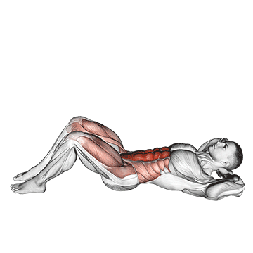

Hasizom gyakorlatok
|  |
FelülésVégezz felülést, figyelve arra, hogy a hasizom erejét használod, nem pedig a csípő hajlítóizmait. A hátadat picit görbítsd be ennek érdekében. Arra koncentrálj, hogy a mellkasodat közelítsd a térded felé. |
|
|---|---|---|
HasprésFeküdj hanyatt, a lábadat egy padra feltéve. A karodat fond össze a tested előtt, vagy kulcsold össze a fejed mögött. Lassan hajlítsd vállát a térded felé, annyira, hogy lapockáid 3-5 cm-re eltávolodjanak a padlótól. Tarts ki így egy másodpercig, majd ereszkedj vissza a kiinduló helyzetbe és ismételj. |
||
 |
Hasprés törzsfordítássalFeküdj hanyatt, lábadat egy padra feltéve. A karodat keresztben fond össze a tested előtt, vagy kulcsold össze a fejed mögött. Lassan hajlítsd a vállad a térded felé, annyira, hogy lapockáid 3-5 cm-re eltávolodjanak a padlótól, közben a törzsedet fordítsd oldalra, mintha a jobb válladat szeretnéd a bal térdedhez érinteni, és fordítva. Tarts ki így egy másodpercig, majd ereszkedj vissza a kiinduló helyzetbe, és ismételj a másik oldalra. |
|
LábemelésFeküdj hanyatt egy egyenes padon. A lábad lógjon le, a kezedet vagy tedd a feneked alá, vagy kapaszkodj meg a fejed felett valamiben. A hasizmod erejével emeld fel a lábaidat, majd lassan engedd őket vissza a vízszintes pozícióba. |

|
|
 |
PlankVegyünk fel egy szokványos fekvőtámasz pozíciót, majd a felkarjainkat támasszuk le a talajra (arra merőlegesek legyenek) vállszélességű helyzetben, az alkarok előre néznek, tenyerek lefelé, vagy semleges tartásban egymás felé. A talajjal így összesen a lábujjaink érintkeznek, illetve a könyök és alkar. A törzs egésze egyenes vonalat képez, ne engedjük, hogy a fenekünk lejjebb, vagy feljebb kerüljön ettől a vonaltól, az a gyakorlat hatékonyságából vesz el, illetve főleg a leejtése a derekunkra is túl nagy terhet róna. |
|